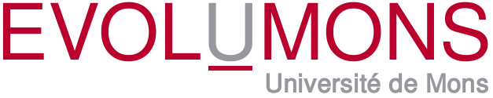

 2011 |
 |
 |
 |
Research Seminar on Software Evolution
Israel Herraiz
Israel Herraiz is an assistant professor at the Universidad Alfonso X el Sabio in Madrid, Spain. He obtained a PhD from Universidad Rey Juan Carlos, while working at the GSyC/Libresoft research group. His research interests lie in the intersection between software evolution, mining software repositories, and empirical software engineering, with an emphasis on large scale studies and statistical analysis of software projects. He is a member of the editorial review board of the International Journal of Open Source Software and Processes (IJOSSP) and the International Journal of Social and Organizational Dynamics in IT (IJSODIT).
The dynamics of software evolution
Presentation slides are available on SlideShare
Abstract of talk. In this talk, we will examine how the dynamics of software evolution is like, by applying time series analysis to the information extracted from libre (free / open source) software repositories. We will compare that dynamics to other notable examples, like the stock market. Finally, we will show how that information can be applied to managing software projects.
Back to main page of EvolUMons 2011
{kind=link}
{kind=link}